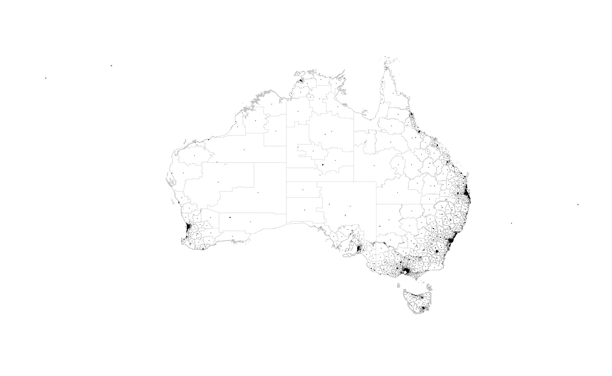
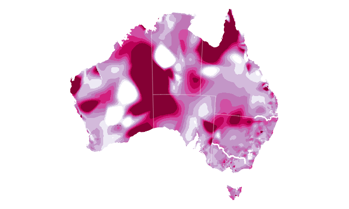

Wanting to try out the R language, this heat map is based on Nathan Yau's great animated map of US unemployment. (Un)fortunately, Australia missed most of the GFC - partly due to the mining boom, so the blood letting isn't nearly as impressive/terrifying as the US.
Now, if only the ABS would release illicit drug use patterns in wastewater analysis by suburb we might find an interesting correlation between FIFO workers and drug use.
Tech
R

Centriod plot

Unemployment Time lapse